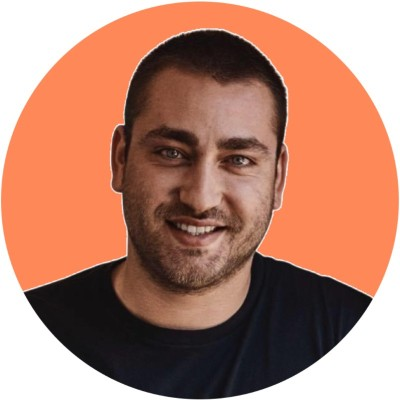

Understand.
I sit with the people who do the work and map how it flows today: every handover, every re-key, every workaround. You get it on one page, in plain English.
I work inside small businesses as a hands-on, part-time CTO. I learn how your work really gets done, find where time and money are leaking, and then build the fix myself: automation, integrations and AI your team will use.
Sydney-based. 15 years running technology inside operating businesses. Founder of two of my own.
The problem
You know the business could run better. You can see it every week:
Larger companies have a CTO whose job is to sort this out. You have a to-do list, a business to run and no time to become a technology expert.
Advice won't close that gap. You have had advice. What is missing is someone who can decide what matters, then roll up their sleeves and build it.
What I do
I sit with the people who do the work and map how it flows today: every handover, every re-key, every workaround. You get it on one page, in plain English.
Not everything is worth automating. I rank each fix by what it saves against what it costs, so you know where the first dollar should go and what can wait.
This is where most consultants stop and I start. I connect your systems, automate the repetitive work and put AI where it earns its keep: answering enquiries, drafting quotes, chasing follow-ups, pulling reports.
Technology decisions keep coming. I stay on as your part-time CTO: choosing software, keeping vendors honest, looking after security and making sure what we built keeps working.
No handover to a junior team. No hundred-page report. The person you talk to is the person who builds it.
How it works
A conversation. Thirty minutes, no charge. You tell me what is slowing the business down. I tell you honestly whether I can help.
A review of how you work. Over one to two weeks, together with you, I map your key processes and systems. You get a short, ranked list of fixes, each with an estimate of effort and payoff.
The first build. We pick the fix with the best return and I build it. You see it working in your business in weeks, not quarters.
Your part-time CTO. If it is working, I stay on for a set number of hours or days per week or month to keep building and to own your technology decisions. No lock-in contract.
Every step ends with something you can use, even if we go no further.
Why me

I'm Robbie. For 15 years I have been the person responsible when the technology has to work on Monday morning.
I have also been the owner signing the cheques. I know what it is to weigh a software bill against a wage, and I will treat your budget the way I treat my own.
Who it's for
No. Most owners know something is costing them time but not what to do about it. Working that out is the first part of the job.
Good. You shouldn't have to be. I explain things in plain English and build tools your team can use without training manuals.
The aim is to take the dull, repetitive work off good people so they can do the work you hired them for. What you do with the time saved is your call.
Keep them. They keep the laptops, email and network running. I look at how the business itself runs and build what makes it run better. We work alongside each other.
The first working fix is usually live within a few weeks of the review.
You do. It runs in your accounts, with documentation, so you are never locked in to me.
I have built systems for a regulated credit provider, so security and privacy are part of the design from the first day. Your data stays in your systems.
I am based in Sydney and work with businesses across Australia.
The tools that were out of reach for a small business two years ago are now affordable. What is still scarce is someone who knows which ones matter for you and can put them to work.
Tell me what is slowing you down. In thirty minutes you will know whether it can be fixed, and roughly what it would take.
No pitch and no obligation. If I can't help, I will say so.